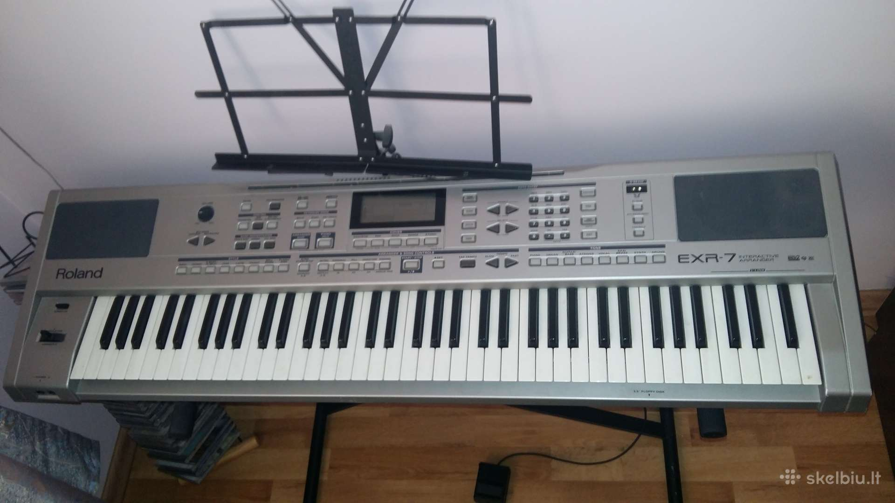

Welcome to sintezatorius
Sintezatoriai | Instrumentai | Klavišiniai instrumentai | Muzikos faktorius
2020.10.30 03:32English Prisijungimas Prisijungimas Krepšelis Krepšelis tuščias. Viso prekių už 0 € Peržiūrėti krepšelį 8 5 277 97 70
mūsų kontaktai
Yamaha produkcija Instrumentai Gitaros ir bosai Klavišiniai instrumentai Būgnai Pučiamieji instrumentai Griežiamieji instrumentai Studijos įranga Ausinės Garso plokštės Studijnės garso kolonėlės PA įranga Aktyvios kolonėlės Aktyvios žemų dažnių kolonėlės Pasyvios kolonėlės Pasyvios žemų dažnių kolonėlės Analoginiai mikšeriai Skaitmeniniai mikšeriai Mikšeriai su stiprintuvu Garso stiprintuvai Garso kolonėlių komplektai Klavišiniai instrumentai Instrumentai Pianinai Fortepijonai Sintezatoriai Stacionarūs skaitmeniniai pianinai Portatyvūs skaitmeniniai pianinai Akordeonai Vargonai Priedai, dalys Dėklai Akordeonų diržai Stovai, laikikliai Stovų priedai Pedalai Kėdutės Metronomai Matinimo blokeliai Stiprintuvai, įgarsinimas Įvairūs priedai ir dalys Styginiai instrumentai Gitaros ir bosai Akustinės gitaros Akustinės gitaros su pajungimu Klasikinės gitaros Klasikinės gitaros su pajungimu Elektrinės gitaros Bosinės gitaros Ukulelės, gitarėlės, kelioninės gitaros Dvylikastygės gitaros Griežiamieji instrumentai Smuikai Violončelės Kontrabosai Kiti styginiai instrumentai Bandžos Mandolinos Priedai, dalys Stiprintuvai, įgarsinimas, priedai ir dalys Strykai Stygos Dėklai Stovai, laikikliai Laidai su jungtimis Diržai ir tvirtinimo sistemos Derintuvai, metronomai Efektai ir jų priedai, dalys Maitinimo blokeliai ir jų priedai Priežiūros priemonės Dalys Kiti priedai Būgnai, perkusija Būgnai Akustinių būgnų komplektai Elektroniniai būgnai Lėkštės Marširavimo instrumentai Soliniai būgnai Perkusija Cajon būgnai Džembės Kalimbos ir sansulos Marakasai, barškalai Tambūrinai Šamano būgnai Lietaus vamzdžiai Metalofonai, ksilofonai Mėnulio būgnai Kongai, bongai Kita perkusija Priedai, dalys Lazdelės ir šluotelės Plastikai Dėklai Kėdutės Stovai, laikikliai, priedai Pedalai Priežiūros priemonės Dalys Treniruokliai Įvairūs priedai ir dalys Stiprintuvai elektroniniams būgnams Pučiamieji instrumentai Tradiciniai instrumentai Saksofonai Trimitai Klarnetai Išilginės fleitos Fleitos Kornetai Tūbos Fliugelhornai Valtornos Trombonai Eufonijos Althornai Kiti pučiamieji instrumentai Didžeridū Okarinos Lūpinės armonikėlės Melodikos Dambreliai Įvairūs pučiamieji instrumentai Priedai, dalys Liežuvėliai Surdinos Pūstukai Dėklai Stovai, laikikliai Diržai Priežiūros priemonės Natų stovai Ligatūros Lyros Garso technika PA įranga Mikšeriai Mikrofonai Garso kolonėlės Garso stiprintuvai Garso procesoriai ir efektai Garso kolonėlių komplektai Laidai, jungtys ir perėjimai Bevielė įranga Stovai Priedai Studijos įranga Ausinės Mikrofonai Garso plokštės Studijinės garso kolonėlės Studijinės įrangos komplektai MIDI klaviatūros ir kontroleriai Akustinės medžiagos Programinė įranga Priešstiprintuviai Diktofonai Ritmo mašinos, sempleriai, sintezatoriai DJ įranga Ausinės Garso plokštės Kontroleriai ir grotuvai Patefonų adatos Plokštelės ir kompaktiniai diskai Patefonai Mikšeriai Priedai Scena ir apšvietimas Apšvietimo įranga Lazeriai Prožektoriai LED ekranai Stroboskopai Judančios šviesos Apšvietimo komplektai LED apšvietimo technika Apšvietimo valdymo pultai Dekoracinė apšvietimo technika Dūmų, sniego ir burbulų mašinos Priedai Laidai Stovai Skystis ir kvapai Apšvietimo lemputės Dėžės ir transportavimo krepšiai Akcijos, išpardavimas
Prekių katalogas
Yamaha produkcija Instrumentai Gitaros ir bosai Akustinės gitaros Klasikinės gitaros Elektrinės gitaros Bosinės gitaros Silent gitaros Stiprintuvai ir priedai Klavišiniai instrumentai Pianinai Stacionarūs skaitmeniniai pianinai Portatyvūs skaitmeniniai pianinai Sintezatoriai Priedai Būgnai Elektroniniai būgnai Akustiniai būgnai Pučiamieji instrumentai Išilginės fleitos Fleitos Piccolo fleitos Klarnetai Saksofonai Trimitai Pūstukai Kiti pučiamieji instrumentai Griežiamieji instrumentai Smuikai Violončelės Silent instrumentai Elektriniai instrumentai Anglies pluošto strykai Priedai Studijos įranga Ausinės Garso plokštės Studijnės garso kolonėlės PA įranga Aktyvios kolonėlės Aktyvios žemų dažnių kolonėlės Pasyvios kolonėlės Pasyvios žemų dažnių kolonėlės Analoginiai mikšeriai Skaitmeniniai mikšeriai Mikšeriai su stiprintuvu Garso stiprintuvai Garso kolonėlių komplektai Klavišiniai instrumentai Instrumentai Pianinai Fortepijonai Sintezatoriai Stacionarūs skaitmeniniai pianinai Portatyvūs skaitmeniniai pianinai Akordeonai Vargonai Priedai, dalys Dėklai Akordeonų diržai Stovai, laikikliai Stovų priedai Pedalai Kėdutės Metronomai Matinimo blokeliai Stiprintuvai, įgarsinimas Įvairūs priedai ir dalys Styginiai instrumentai Gitaros ir bosai Akustinės gitaros Akustinės gitaros su pajungimu Klasikinės gitaros Klasikinės gitaros su pajungimu Elektrinės gitaros 6 stygų elektrinės gitaros 7 stygų elektrinės gitaros Bosinės gitaros 4 stygų bosinės gitaros 5 stygų bosinės gitaros Akustinės bosinės gitaros Ukulelės, gitarėlės, kelioninės gitaros Sopraninės ukulelės Koncertinės ukulelės Tenorinės ukulelės Bosinės ukulelės Gitarėlės Kelioninės gitaros Dvylikastygės gitaros Griežiamieji instrumentai Smuikai 4/4 dydžio smuikai 3/4 dydžio smuikai 1/2 dydžio smuikai 1/4 dydžio smuikai Kitų dydžių smuikai Violončelės 4/4 dydžio violončelės 3/4 dydžio violončelės 1/2 dydžio violončelės 1/4 dydžio violončelės Kitų dydžių violončelės Kontrabosai Kiti styginiai instrumentai Bandžos Mandolinos Priedai, dalys Stiprintuvai, įgarsinimas, priedai ir dalys Stiprintuvai elektrinėms gitaroms Stiprintuvai bosinėms gitaroms Stiprintuvai akustiniams instrumentams Stiprintuvai be kolonėlių elektrinėms gitaroms Stiprintuvai be kolonėlių bosinėms gitaroms Elektrinių gitarų kolonėlės Bosinių gitarų kolonėlės Belaidės sistemos Portatyvios kolonėlės Garso ėmikliai Lempos stiprintuvams Stovai, laikikliai Kanalų perjungimo pedalai Įvairūs priedai ir dalys stiprintuvams Strykai Strykai smuikams Strykai violončelėms Strykai kontrabosams Plaukai strykams Stygos Stygos akustinėms gitaroms Stygos klasikinėms gitaroms Stygos elektrinėms gitaroms Stygos bosinėms gitaroms Stygos 12-stygėms gitaroms Stygos ukulelėms Stygos smuikams Stygos violončelėms Stygos kotrabosams Stygos kitiems instrumentams Stygos po vieną Dėklai Dėklai akustinėms gitaroms Dėklai klasikinėms gitaroms Dėklai elektrinėms gitaroms Dėklai bosinėms gitaroms Dėklai smuikams Dėklai violončelėms Dėklai kontrabosams Dėklai ukulelėms, gitarėlėms Dėklai kitiems styginiams instrumentams Stovai, laikikliai Stovai, laikikliai gitaroms Stovai, laikikliai griežiamiesiems instrumentams Stovai, laikikliai ukulelėms, gitarėlėms Stovai, laikikliai kitiems instrumentams Laidai su jungtimis Diržai ir tvirtinimo sistemos Derintuvai, metronomai Efektai ir jų priedai, dalys Efektų procesoriai Overdrive, distortion, fuzz efektai Chorus, flanger, phaser efektai Delay, reverb, echo efektai Looper efektai Compressor, gate, equalizer efektai Wah wah pedalai Volume, expression pedalai Derintuvai Įvairūs efektai Dėžės, dėklai efektams Maitinimo blokeliai ir jų priedai Priežiūros priemonės Dalys Potenciometrai, jungikliai Derinimo mašinėlės Tiltai, stygų tvirtinimo sistemos Valdymo rankenėlės Jungtys, laidai Įvairios dalys Kiti priedai Brauktukai Antpirščiai (slide) Kapodasteriai Pakojos Pasmakrėlės Pečių atramėlės ir jų dalys Surdinos Kanifolija Įvairūs priedai Būgnai, perkusija Būgnai Akustinių būgnų komplektai Elektroniniai būgnai Lėkštės Crash lėkštės Ride lėkštės Hi-hat lėkštės Splash lėkštės China lėkštės Lėkščių rinkiniai Marširavimo instrumentai Soliniai būgnai Perkusija Cajon būgnai Džembės Kalimbos ir sansulos Marakasai, barškalai Tambūrinai Šamano būgnai Lietaus vamzdžiai Metalofonai, ksilofonai Mėnulio būgnai Kongai, bongai Kita perkusija Priedai, dalys Lazdelės ir šluotelės Lazdelės Šviečiančios lazdelės Šluotelės Orkestrinės lazdelės Rute, tala wand lazdelės Įvairios lazdelės Plastikai Dėklai Būgnų dėklai Lėkščių dėklai Stovų dėklai Lazdelių dėklai Kėdutės Stovai, laikikliai, priedai Lėkščių stovai Solinių būgnų stovai Hi-hat stovai Stovų rinkiniai Būgnų stovų priedai Pedalai Priežiūros priemonės Dalys Treniruokliai Įvairūs priedai ir dalys Stiprintuvai elektroniniams būgnams Pučiamieji instrumentai Tradiciniai instrumentai Saksofonai Altiniai saksofonai Tenoriniai saksofonai Sopraniniai saksofonai Trimitai Klarnetai Išilginės fleitos Sopraninės išilginės fleitos Altinės išilginės fleitos Tenorinės išilginės fleitos Bosinės išilginės fleitos Sopranininės išilginės fleitos Fleitos Kornetai Tūbos Fliugelhornai Valtornos Trombonai Eufonijos Althornai Kiti pučiamieji instrumentai Didžeridū Okarinos Lūpinės armonikėlės Melodikos Dambreliai Įvairūs pučiamieji instrumentai Priedai, dalys Liežuvėliai Liežuvėliai altiniam saksofonui Liežuvėliai klarnetui Liežuvėliai sopraniniam saksofonui Liežuvėliai tenoriniam saksofonui Liežuvėliai baritoniniam saksofonui Surdinos Pūstukai Dėklai Stovai, laikikliai Diržai Priežiūros priemonės Natų stovai Ligatūros Lyros Garso technika PA įranga Mikšeriai Analoginiai mikšeriniai pultai Skaitmeniniai mikšeriniai pultai Mikšeriniai pultai su stiprintuvu Priedai mikšeriniams pultams Mikrofonai Vokaliniai mikrofonai Dinaminiai mikrofonai Kondensatoriniai mikrofonai Instrumentiniai mikrofonai Didelės diafragmos mikrofonai Mažos diafragmos mikrofonai Bevieliai mikrofonai Bevielės sistemos su rankiniu mikrofonu Bevielės sistemos su lankeliu Bevielės sistemos su prisegamu mikrofonu Bevielių mikrofonų krovimo stotelės USB mikrofonai Video mikrofonai Konferenciniai mikrofonai Konferencinės ir gidų sistemos Konferenciniai mikrofonai Megafonai Matavimo mikrofonai Mikrofonų komplektai Prisegami mikrofonai Priedai mikrofonams Karaoke Garso kolonėlės Aktyvios garso kolonėlės Aktyvios žemų dažnių kolonėlės Pasyvios garso kolonėlės Pasyvios žemų dažnių kolonėlės Portatyvios garso kolonėlės Instaliacinės garso kolonėlės Garso stiprintuvai Garso procesoriai ir efektai Garso kolonėlių komplektai Laidai, jungtys ir perėjimai Laidai su jungtimis Laidai mikrofonams Laidai kolonėlėms Audio laidai MIDI laidai Skaitmeninės sąsajos laidai Daugiagysliai laidai DMX laidai Maitinimo laidai Laidai be jungčių Jungtys XLR JACK RCA Speakon Perėjimai Bevielė įranga Bevielės sistemos su rankiniu mikrofonu Bevielės sistemos su lankeliu Bevielės sistemos su prisegamu mikrofonu Bevielės instrumentinės sistemos IN-EAR monitoringo sistemos Bevielės stereo sistemos Stovai Stovai mikrofonams Stovai kolonėlėms Stovai kompiuteriams Sieniniai kolonėlių laikikliai Įvairūs stovai Priedai DI-BOX Baterijos ir blokeliai Dėklai, dėžės ir transportavimo krepšiai Kiti priedai Klausos apsauga Studijos įranga Ausinės Studijos ausinės IN-EAR ausinės Belaidės ausinės Laisvalaikio ausinės Priedai ausinėms Mikrofonai Garso plokštės Studijinės garso kolonėlės Aktyvios artimo lauko kolonėlės Aktyvios vidutinio lauko kolonėlės Aktyvios žemų dažnių kolonėlės Kolonėlių komplektai Kolonėlių garso valdikliai Studijinių kolonėlių stovai Studijinės įrangos komplektai MIDI klaviatūros ir kontroleriai MIDI klaviatūros MIDI kontroleriai DAW kontroleriai Akustinės medžiagos Programinė įranga Priešstiprintuviai Ausinių priešstiprintuviai Mikrofonų priešstiprintuviai Diktofonai Ritmo mašinos, sempleriai, sintezatoriai DJ įranga Ausinės Garso plokštės Kontroleriai ir grotuvai Patefonų adatos Plokštelės ir kompaktiniai diskai Patefonai Mikšeriai Priedai Scena ir apšvietimas Apšvietimo įranga Lazeriai Prožektoriai LED ekranai Stroboskopai Judančios šviesos Apšvietimo komplektai LED apšvietimo technika Apšvietimo valdymo pultai Dekoracinė apšvietimo technika Dūmų, sniego ir burbulų mašinos Priedai Laidai Stovai Skystis ir kvapai Apšvietimo lemputės Dėžės ir transportavimo krepšiai Akcijos, išpardavimas Pradžia / Klavišiniai instrumentai / Instrumentai / SintezatoriaiSintezatoriai
1 - 24 iš 77 -21 % YAMAHA GENOS Digital Workstation 3696 € 4660 € Sutaupykite 964 € -15 % Yamaha Montage 8 Synthesizer 3666 € 4299 € Sutaupykite 633 € NORD STAGE 3 COMPACT 3558 € NORD ELECTRO 6 HP 2440 € NORD ELECTRO 6D 73 2033 € -15 % Sintezatorius YAMAHA PSR-SX900 1929 € 2280 € Sutaupykite 351 € NORD ELECTRO 6D 61 1830 € -12 % Korg PA-1000 1755 € 1999 € Sutaupykite 244 € KORG PA-900 61-Key Professional Arranger 1699 € KORG PA-800 61-Key Professional Arranger 1599 € -17 % Sintezatorius - YAMAHA PSR-S970 1595 € 1926 € Sutaupykite 331 € KORG Krome-88 88-Key Synthesizer Workstation 1499 € KORG PA-700 61-Key Professional Arranger 1299 € -17 % Yamaha MOXF-8 88-Key Synthesizer Workstation 1223 € 1479 € Sutaupykite 256 € -16 % Sintezatorius - YAMAHA PSR-SX700 1090 € 1290 € Sutaupykite 200 € KORG Krome-61 61-Key Synthesizer Workstation 999 € CASIO MZ-X500 949 € Analoginis sintezatorius - Behringer DEEPMIND-6 789 € -13 % Yamaha DGX-660 88-Key Arranger Piano - White 769 € 886 € Sutaupykite 117 € -13 % Yamaha DGX-660 88-Key Arranger Piano - Black 769 € 886 € Sutaupykite 117 € CASIO MZ-X300 759 € Sintezatorius - Medeli - AKX-10 700 € Portatyvus sintezatorius Medeli A-1000 Portable Electronic Keyboard 625 € Analoginis sintezatorius - Behringer - VC340 599 € 1 2 3 Apie mus Paslaugos Pirkimo taisyklės Informacija perkantiems Kontaktai PRIVATUMO POLITIKA Pirkėjo gidas COVID-19 Muzikos faktorius © 2020 UAB "MUZIKOS FAKTORIUS". Be UAB "MUZIKOS FAKTORIUS" sutikimo draudžiama kopijuoti ir platinti svetainėje esančią informaciją. El. parduotuvių nuoma: verskis.lt Į viršų